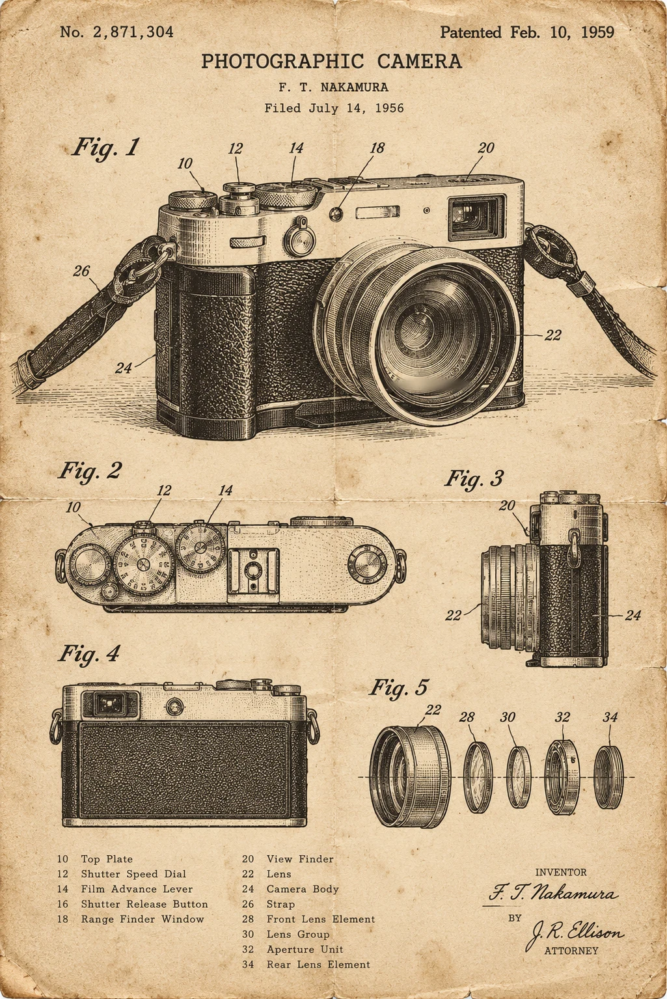
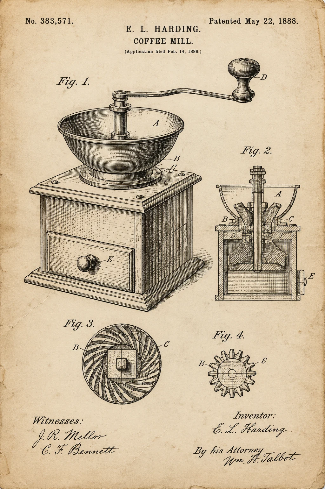
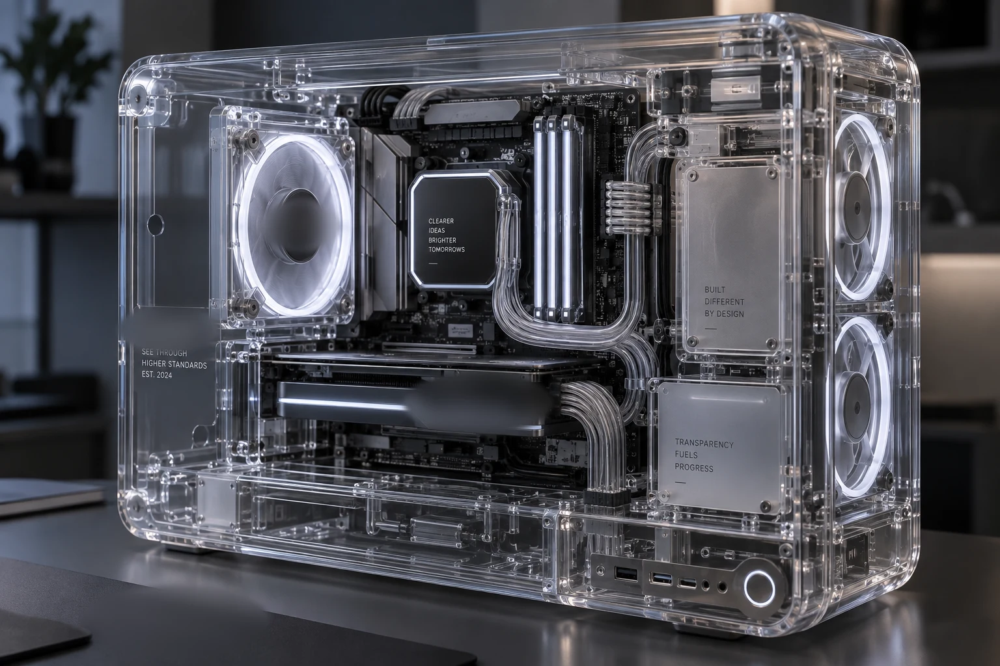

Промпты для ретро в ChatGPT: как пользоваться
Начни со своего снимка. Сначала прикрепи фото своей вещи, затем вставь промпт: ChatGPT изменит загруженное изображение. Работа с фото описана в справке OpenAI
Слово со слэшем, например /oldpatent, служит коротким именем стиля, а не отдельной встроенной командой ChatGPT. Копируй промпт целиком вместе с английским описанием. Перевод под ним помогает выбрать нужный эффект
1. Прикрепи своё фото
Открой ChatGPT и новый чат. Нажми кнопку добавления вложения рядом с полем сообщения, выбери фото своей вещи и дождись его миниатюры. Пока не отправляй сообщение: сначала добавь промпт из следующего пункта
Результат: в новом сообщении видно прикреплённое фото
2. Вставь промпт целиком
Найди подходящий перевод ниже и нажми «Скопировать» на его плашке. Вставь скопированный промпт в сообщение с фото и отправь. Дождись готовой картинки. Для другого эффекта снова прикрепи исходное фото, чтобы следующий запрос не менял предыдущий результат
Результат: есть исходник и новая картинка, которые можно сравнить
3. Сравни и сохрани
Открой результат крупно и сравни с исходником. Если потерялись нужные детали, уточни по-русски: «Сохрани форму корпуса, объектив и расположение кнопок, меняй только стиль изображения». Уточнение может помочь, но точное сохранение деталей нужно проверить. Наши пробы ниже сделаны за одну попытку, без таких уточнений
Когда результат подходит, открой картинку и нажми Save («Сохранить»), чтобы скачать файл. Способы редактирования и сохранения описаны в справке OpenAI
Результат: сохранён файл с нужным эффектом после сравнения с твоим фото
Пробы было/стало
Наши пробы: фото + промпт целиком, одна попытка. Дополнительных уточнений и дорисовки не было. На исходнике до генерации и на отдельных результатах мягко размыта маркировка объектива; на результате разборки также размыты служебные знаки на нижней панели. Остальная картинка сохранена
Фотоаппарат на странице патента
/oldpatent - vintage patent page

Исходник: Pexels №10281775, Pexels License. Результат создан генератором изображений
Сохранён узнаваемый вид фотоаппарата: серебристый верх, чёрный корпус, объектив и ремень. Модель превратила его в рисунок и добавила виды сверху, сбоку и сзади, схему объектива, подписи, номер, даты и имена. Невидимые ракурсы и все реквизиты придуманы ею: это оформление под патент, а не исторический документ
Прозрачный корпус
/ghostshell - clear shell, inner mechanism


Исходник: Pexels №10281775, Pexels License. Результат создан генератором изображений
Узнаваемы форма корпуса, объектив, верхние диски, ремень и размытый фон. Вместо непрозрачного корпуса появился прозрачный, сквозь который видны платы, шлейфы и металлические детали. На исходном фото внутренности не видны: модель дорисовала их сама, устройство реального фотоаппарата эта картинка не подтверждает
Детали раздвинуты
/revealparts - parts floating apart


Исходник: Pexels №10281775, Pexels License. Результат создан генератором изображений
Узнаваемы серебристый верх, чёрные панели корпуса, объектив и ремень. Верхние диски и панели раздвинуты по вертикали, объектив и линзы вынесены вперёд; между частями появились винты, платы и шлейфы. Количество деталей и их соединения модель придумала. Получился эффект разборки, который нельзя использовать как инструкцию по ремонту
Ретро и учебные страницы
24 промпта. Читай перевод и копируй запрос с нужным эффектом
/oldscreen - old thick monitorстарый монитор с толстым корпусом
/matchpack - vintage matchbox designвинтажная коробка спичек
/tinlabel - rusted old tinржавая старая жестяная банка
/signpaint - painted shop signнарисованная вывеска магазина
/oldprint - vintage catalog pageстраница старого каталога
/typedpage - old typewriter pageстраница, набранная на пишущей машинке
/oldcatalog - encyclopedia pageстраница энциклопедии
/pinbutton - enamel badge pinзначок с эмалью
/oldradio - wooden vintage radioстарое деревянное радио
/vintagetv - boxy old televisionстарый телевизор в коробчатом корпусе
/oldphone - rotary telephoneтелефон с дисковым набором
/oldcar - classic chrome carклассический автомобиль с хромом
/oldcamera - vintage film cameraстарый плёночный фотоаппарат
/oldbicycle - bike with basketвелосипед с корзиной
/oldsuitcase - travel sticker suitcaseчемодан с дорожными наклейками
/oldticket - perforated ticket stubбилет с отрывной перфорацией
/oldstamp - old postage stampстарая почтовая марка
/oldcoin - tarnished metal coinпотускневшая металлическая монета
/oldmap - yellowed treasure mapпожелтевшая карта сокровищ
/oldkey - ornate metal keyметаллический ключ с узорами
/oldlock - rusty iron lockржавый железный замок
/oldclock - roman numeral clockчасы с римскими цифрами
/oldlantern - glowing old lanternсветящийся старый фонарь
/oldbook - leather bound bookкнига в кожаном переплёте
Заглянуть внутрь предмета
24 промпта. Читай перевод и копируй запрос с нужным эффектом
/revealparts - parts floating apartдетали предмета раздвинуты и парят
/bluecopy - technical blueprint drawingтехнический чертёж на синем фоне
/layerpeel - stacked layers separatedслои отделены друг от друга
/oldpatent - vintage patent pageстраница старого патента
/gridflat - pieces flat from aboveдетали разложены, вид сверху
/sidecut - clean middle cross sectionаккуратный разрез посередине
/grainzoom - extreme surface textureфактура поверхности очень крупно
/topdown - floor plan from aboveплан помещения сверху
/partsfloat - loose floating partsотдельные детали парят в воздухе
/wireframe2 - see through line meshпрозрачная сетка линий
/ghostshell - clear shell, inner mechanismпрозрачный корпус с механизмом внутри
/layerstack - horizontal layers with gapsгоризонтальные слои с промежутками
/techdraw - callout lines and labelsчертёж с выносками и подписями
/skeletonview - inner frame onlyтолько внутренний каркас
/diagramline - parts linked to notesдетали связаны линиями с пояснениями
/insidebox - front wall removedу коробки убрана передняя стенка
/peeledback - surface corner peeledугол поверхности отогнут
/openhinge - opened like a bookпредмет раскрыт как книга
/transparentshell - clear glass outsideпрозрачная стеклянная оболочка
/innerworks - internal gears close upвнутренние шестерёнки крупным планом
/scaledmodel - mini model cutawayминиатюрная модель в разрезе
/crosshatch - line hatch shading onlyтолько штриховая тень
/anatomymap - anatomy style labelsподписи как на анатомической схеме
/buildorder - assembly order left to rightпорядок сборки слева направо
Другие подборки серии
Семь тем, каждая со своими промптами. Следующие подборки появятся здесь после публикации
Вещь состарена и разобрана. Что из этого вырастет?
Что можно делать с нейросетями, если не знаешь кода?
Чтобы почувствовать размах, посмотри Концентрат Ивана Сергеева. ИИ-агенты на твоих глазах собирают продукт, контент, сайты и воронки без кода. Это основа под любую цель: свои услуги, партнёрка, чужой бизнес. Три дня бесплатно, VIP с четвёртым днём - 990 ₽
Забрать КонцентратУже знаешь, чего хочешь? Тогда в мастер-группу Ивана: система продаж на ИИ без продюсера и технаря, сопровождение и сообщество
Заполнить анкету предзаписиНабор открывается редко, кто записался заранее, получает лучшую цену и бонусы. Платить сейчас не нужно
Реклама. ИП Сергеев И. С., ИНН 352511695540. erid: 2Vtzqvk2p6q
Что проверить перед сохранением
Сначала сравни корпус, объектив, кнопки и ремень со своим фото. Другие ракурсы и скрытые детали модель дорисовывает. В пробе с патентом она добавила номер, даты и имена; прозрачный корпус показал платы и шлейфы, а раздвинутые детали составили воображаемую сборку. Фото снаружи не подтверждает устройство внутри. Для учебной схемы сверь результат с достоверной документацией на свою вещь; декоративную картинку сохраняй с пояснением, что внутренности придуманы моделью